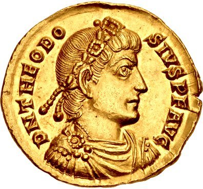

-
Adam Duff
Adam Duff was a Unitarian martyr of the fourteenth century. He denied the Incarnation and the Trinity of Persons; he was therefore said to be possessed with a diabolical spirit. He was tried and sentenced to be "burned and hanged in the fire at Hoggin-green," near Dublin. The sentence was carried out.

-
Ludwig Haetzer
On this day, Ludwig Haetzer (AKA Louis Haetzer) was beheaded on the charge of blasphemy. Ludwig, a Swiss, was all intents and purposes, alone in his thought about the true nature of God "that the Father alone is the true God - that Christ is not equal to the Father - that there are not three persons in one God, because God is altogether ineffable, being neither person nor essence."
A man of great learning, he wrote a treatise against the deity of Christ, but it was soon suppressed. Ludwig was also a composer of many hymns. There survives the following explicitly anti-Triniarian utterance, placed in the mouth of God:
I am He who created all things through His own might. Thou askest, how many persons am I? I am one!
I am not three persons, but I am one! And I cannot be three persons, but I am one!
I know nothing of persons: I alone am the source of all life. Him who does not know me, I know not;
I alone am!
-
Catherine Vogel
Catherine Vogel (AKA Katarzyna Weiglowa) is regarded as the first recorded Polish Unitarian martyr. An old lady of over eighty years of age. She was burnt in the city of Cracow in 1539. Before her judges she avowed her view of God in the following language:
"I believe in the existence of One God, who has created all the visible and invisible world, and who cannot be conceived by the human intellect." She also denied that Jesus Christ was from eternity the Son of God. In other words, Jesus the Son of God began his existence in the womb of his mother (as recorded in Luke 1:30-37) and not before!
-
Adam Pastor
In 1546, Adam Pastor (AKA Rudolph Martens) was excommunicated from the Anabaptists of Frisia. Why? On account of his sentiments concerning the Trinity. He maintained that the Father alone was the true God. In 1547 whilst in fellowship with the Mennonites, he declared himself a unitarian, holding that Christ did not exist as the Son of God before his conception. He was subsequently excommunicated from that community because of his views of God and Jesus. For further information, as well as the above link, Adam Pastor is featured in the following video,
Unitarian Trail Blazers by Sean Finnegan -
George Van Parris
George Van Parris, a surgeon, came to England from Germany during the first half of the sixteenth century. On his arrival in London he joined the Stranger Church in Austin Friars (pictured). It is thought he settled in London from having heard "that strangers in England were exempted from certain penal laws." This he soon learned was not so, for having declared "that God the Father was the only God, and that Christ was not very (truly) God." He was pronounced "an obstinate heretic" and was burnt at the stake in Smithfield.
-
Michael Servetus
Michael Servetus (AKA Miguel Servet, Miguel de Villanueva, 1511 - 1553) was this day, burnt alive atop a pyre of his own books at the Plateau of Champel at the edge of Geneva. Servetus was a Spanish theologian, physician, cartographer, a polymath and the discover of pulminary circulation. Regarding the Trinity, Servetus wrote the following books: On the Errors of the Trinity, Dialogues on the Trinity and the Restitution of Christianity. Servetus sought to have an open dialogue with John Calvin. Calvin vowed that if Servetus was to ever visit Geneva, "should he come, if my authority is of any avail, I will not suffer him to get out alive." Thus, Servetus was burnt alive on the 27th of October, 1553. A strong breeze that sprung up scattered the flames and kept him in great torture for about half an hour. He was heard to exclaim, Jesus, thou Son of the Eternal God, have pity on me. So died this distinguished physician and reformer.
An eyewitness noted that if he had only moved the adjective "eternal" and called
Jesus the "Eternal Son of God," (i.e. a Trinitarian confession) his life would have been spared. For further information, as well as the above link, Michael Servetus is featured in the following video,
Unitarian Trail Blazers by Sean Finnegan -
Melito promulgates deicide - 'God is murdered!'
In a sermon about the Passover, Melito of Sardis makes the following statement: "The one who hung the earth in space, is himself hanged; the one who fixed the heavens in place, is himself impaled; the one who firmly fixed all things, is himself firmly fixed to the tree. The Lord is insulted, God has been murdered, the King of Israel has been destroyed by the right hand of Israel."In just under two centuries following the birth of Jesus, Jesus has been identified as the God who was killed! The departure from biblical teachings was quick and evident.
-
The Council of Nicea
This Council, that was chaired by Emperor Constantine I, declared that the Son was "true God, coeternal with the Father." From this council was produced the Nicene Creed which began by stating "We believe in one God, the Father almighty, maker of all things visible and invisible; And in one Lord, Jesus Christ, the Son of God, begotten from the Father, only-begotten, that is, from the substance of the Father, God from God, light from light, true God from true God, begotten not made, of one substance with the Father,"

-
Photinus
Photinus (died 376), was a Christian bishop of Sirmium in Pannonia Secunda (Pictured is a scale model of Sirmium; today, the town Sremska Mitrovica in Serbia). None of Photinus' writings exist today; his views are known, however, mostly through the twenty-seven anathemas of the council in 351 which condemned him. Photinian became a term to describe anyone who held Christ to be a man, who did not exist until his birth at Nazareth. (As taught in the Bible!) For insightful presentations of this eminent man: 1) Please watch the following video: Kegan Chandler on Photinus, 4th century unitarian. 2) Please listen to the following podcast: Photinus of Sirmium
-
Edict of Thessalonica
The Edict of Thessalonica (also known as Cunctos populos), issued by Theodosius I, made the Catholicism of Nicene Christians the state church of the Roman Empire. It condemned other Christian creeds as heresies of "foolish madmen," and authorised their punishment. It reads: "Let us believe in the one deity of the Father and of the Son and of the Holy Spirit, in equal majesty and in a holy Trinity. We order the followers of this law to embrace the name of Catholic Christians; but as for the others, since, in our judgment they are foolish madmen, we decree that they shall be branded with the ignominious name of heretics, and shall not presume to give to their conventicles the name of churches. They will suffer in the first place the chastisement of the divine condemnation and in the second the punishment of our authority which in accordance with the will of Heaven we shall decide to inflict."
 -
First Council of Constantinople
At this council in now Istanbul, Turkey; which was chaired by the Roman Emperor Theodosius I; the 'Holy Spirit' was added to the Nicene Creed. The Niceno-Constantinopolitan Creed declared that "the Lord, the Giver of Life, Who proceeds from the Father, Who with the Father and the Son is worshipped and glorified." Thus finalising the doctrine of the Trinity as known throughout Christendom today. So, a doctrine and a creed, which are not mentioned in Scripture were foisted onto Christians, by the aid of the Roman Empire.

-
Council of Ephesus
The Council of Ephesus was convened in Ephesus (near present-day Selcuk in Turkey) in June and July 431 by the Roman Emperor Theodosius II. It confirmed the original Nicene Creed and condemned the teachings of Nestorius, who held that Mary may be called the Christotokos, "Christ-bearer" but not the Theotokos, "God-bearer". In other words, Christians were compelled by this council to call Mary, "the Mother of God".